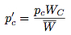
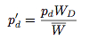
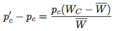
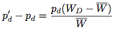
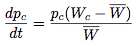
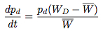
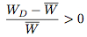
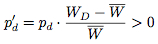
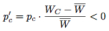

Evolutionary Game Theory
Evolutionary game theory originated as an application of the mathematical theory of games to biological contexts, arising from the realization that frequency dependent fitness introduces a strategic aspect to evolution. Recently, however, evolutionary game theory has become of increased interest to economists, sociologists, and anthropologists--and social scientists in general--as well as philosophers. The interest among social scientists in a theory with explicit biological roots derives from three facts. First, the ‘evolution’ treated by evolutionary game theory need not be biological evolution. ‘Evolution’ may, in this context, often be understood as cultural evolution, where this refers to changes in beliefs and norms over time. Second, the rationality assumptions underlying evolutionary game theory are, in many cases, more appropriate for the modelling of social systems than those assumptions underlying the traditional theory of games. Third, evolutionary game theory, as an explicitly dynamic theory, provides an important element missing from the traditional theory. In the preface to Evolution and the Theory of Games, Maynard Smith notes that “[p]aradoxically, it has turned out that game theory is more readily applied to biology than to the field of economic behaviour for which it was originally designed.” It is perhaps doubly paradoxical, then, that the subsequent development of evolutionary game theory has produced a theory which holds great promise for social scientists, and is as readily applied to the field of economic behaviour as that for which it was originally designed.
- 1. Historical Development
- 2. Two Approaches to Evolutionary Game Theory
- 3. Why Evolutionary Game Theory?
- 4. Applications of Evolutionary Game Theory
- 5. Philosophical Problems of Evolutionary Game Theory
- Bibliography
- Academic Tools
- Other Internet Resources
- Related Entries
1. Historical Development
Evolutionary game theory was first developed by R. A. Fisher [see The Genetic Theory of Natural Selection (1930)] in his attempt to explain the approximate equality of the sex ratio in mammals. The puzzle Fisher faced was this: why is it that the sex ratio is approximately equal in many species where the majority of males never mate? In these species, the non-mating males would seem to be excess baggage carried around by the rest of the population, having no real use. Fisher realized that if we measure individual fitness in terms of the expected number of grandchildren, then individual fitness depends on the distribution of males and females in the population. When there is a greater number of females in the population, males have a higher individual fitness; when there are more males in the population, females have a higher individual fitness. Fisher pointed out that, in such a situation, the evolutionary dynamics lead to the sex ratio becoming fixed at equal numbers of males and females. The fact that individual fitness depends upon the relative frequency of males and females in the population introduces a strategic element into evolutions.
Fisher's argument can be understood game theoretically, but he did not state it in those terms. In 1961, R. C. Lewontin made the first explicit application of game theory to evolutionary biology in “Evolution and the Theory of Games” (not to be confused with the Maynard Smith work of the same name). In 1972, Maynard Smith defined the concept of an evolutionarily stable strategy (hereafter ESS) in the article “Game Theory and the Evolution of Fighting.” However, it was the publication of “The Logic of Animal Conflict,” by Maynard Smith and Price in 1973 that introduced the concept of an ESS into widespread circulation. In 1982, Maynard Smith's seminal text Evolution and the Theory of Games appeared, followed shortly thereafter by Robert Axelrod's famous work The Evolution of Cooperation in 1984. Since then, there has been a veritable explosion of interest by economists and social scientists in evolutionary game theory (see the bibliography below).
2. Two Approaches to Evolutionary Game Theory
There are two approaches to evolutionary game theory. The first approach derives from the work of Maynard Smith and Price and employs the concept of an evolutionarily stable strategy as the principal tool of analysis. The second approach constructs an explicit model of the process by which the frequency of strategies change in the population and studies properties of the evolutionary dynamics within that model.
The first approach can thus be thought of as providing a static conceptual analysis of evolutionary stability. “Static” because, although definitions of evolutionary stability are given, the definitions advanced do not typically refer to the underlying process by which behaviours (or strategies) change in the population. The second approach, in contrast, does not attempt to define a notion of evolutionary stability: once a model of the population dynamics has been specified, all of the standard stability concepts used in the analysis of dynamical systems can be brought to bear.
2.1 Definitions of evolutionary stability
As an example of the first approach, consider the problem of the Hawk-Dove game, analyzed by Maynard Smith and Price in “The Logic of Animal Conflict.” In this game, two individuals compete for a resource of a fixed value V. (In biological contexts, the value V of the resource corresponds to an increase in the Darwinian fitness of the individual who obtains the resource; in a cultural context, the value V of the resource would need to be given an alternate interpretation more appropriate to the specific model at hand.) Each individual follows exactly one of two strategies described below:
Hawk Initiate aggressive behaviour, not stopping until injured or until one's opponent backs down. Dove Retreat immediately if one's opponent initiates aggressive behaviour.
If we assume that (1) whenever two individuals both initiate aggressive behaviour, conflict eventually results and the two individuals are equally likely to be injured, (2) the cost of the conflict reduces individual fitness by some constant value C, (3) when a Hawk meets a Dove, the Dove immediately retreats and the Hawk obtains the resource, and (4) when two Doves meet the resource is shared equally between them, the fitness payoffs for the Hawk-Dove game can be summarized according to the following matrix:
Hawk Dove Hawk ½(V - C) V Dove 0 V/2
Figure 1: The Hawk-Dove Game
(The payoffs listed in the matrix are for that of a player using the strategy in the appropriate row, playing against someone using the strategy in the appropriate column. For example, if you play the strategy Hawk against an opponent who plays the strategy Dove, your payoff is V; if you play the strategy Dove against an opponent who plays the strategy Hawk, your payoff is 0.)
In order for a strategy to be evolutionarily stable, it must have the property that if almost every member of the population follows it, no mutant (that is, an individual who adopts a novel strategy) can successfully invade. This idea can be given a precise characterization as follows: Let ΔF(s1,s2) denote the change in fitness for an individual following strategy s1 against an opponent following strategy s2, and let F(s) denote the total fitness of an individual following strategy s; furthermore, suppose that each individual in the population has an initial fitness of F0. If σ is an evolutionarily stable strategy and μ a mutant attempting to invade the population, then
F(σ) = F0 + (1−p)ΔF(σ,σ) + pΔF(σ,μ)F(μ) = F0 + (1−p)ΔF(μ,σ) + pΔF(μ,μ)
where p is the proportion of the population following the mutant strategy μ.
Since σ is evolutionarily stable, the fitness of an individual following σ must be greater than the fitness of an individual following μ (otherwise the mutant following μ would be able to invade), and so F(σ) > F(μ). Now, as p is very close to 0, this requires that either that
ΔF(σ,σ) > ΔF(μ,σ)or that
ΔF(σ,σ) = ΔF(μ,σ) and ΔF(σ,μ) > ΔF(μ,μ)(This is the definition of an ESS that Maynard Smith and Price give.) In other words, what this means is that a strategy σ is an ESS if one of two conditions holds: (1) σ does better playing against σ than any mutant does playing against σ, or (2) some mutant does just as well playing against σ as σ, but σ does better playing against the mutant than the mutant does.
Given this characterization of an evolutionarily stable strategy, one can readily confirm that, for the Hawk-Dove game, the strategy Dove is not evolutionarily stable because a pure population of Doves can be invaded by a Hawk mutant. If the value V of the resource is greater than the cost C of injury (so that it is worth risking injury in order to obtain the resource), then the strategy Hawk is evolutionarily stable. In the case where the value of the resource is less than the cost of injury, there is no evolutionarily stable strategy if individuals are restricted to following pure strategies, although there is an evolutionarily stable strategy if players may use mixed strategies.[1]
In the years following the original work of Maynard Smith and Price, alternate analytic solution concepts have been proposed. Of these, two important ones are the idea of an evolutionarily stable set (see Thomas 1984, 1985a,b), and the idea of a “limit ESS” (see Selten 1983, 1988). The former provides a setwise generalization of the concept of an evolutionarily stable strategy, and the latter extends the concept of an evolutionarily stable strategy to the context of two-player extensive form games.
2.2 Specifying dynamics for the population
As an example of the second approach, consider the well-known Prisoner's Dilemma. In this game, individuals choose one of two strategies, typically called “Cooperate” and “Defect.” Here is the general form of the payoff matrix for the prisoner's dilemma:
Cooperate Defect Cooperate (R,R′) (S,T′) Defect (T,S′) (P,P′)
Figure 2: Payoff Matrix for the Prisoner's Dilemma.
Payoffs listed as (row, column).
where T > R > P > S and T′ > R′ > P′ > S′. (This form does not require that the payoffs for each player be symmetric, only that the proper ordering of the payoffs obtains.) In what follows, it will be assumed that the payoffs for the Prisoner's Dilemma are the same for everyone in the population.
How will a population of individuals that repeatedly plays the Prisoner's Dilemma evolve? We cannot answer that question without introducing a few assumptions concerning the nature of the population. First, let us assume that the population is quite large. In this case, we can represent the state of the population by simply keeping track of what proportion follow the strategies Cooperate and Defect. Let pc and pd denote these proportions. Furthermore, let us denote the average fitness of cooperators and defectors by WC and WD, respectively, and let W denote the average fitness of the entire population. The values of WC, WD, and W can be expressed in terms of the population proportions and payoff values as follows:
WC = F0 + pcΔF(C,C) + pdΔF(C,D)
WD = F0 + pcΔF(D,C) + pdΔF(D,D)
W = pcWC + pdWD
Second, let us assume that the proportion of the population following the strategies Cooperate and Defect in the next generation is related to the proportion of the population following the strategies Cooperate and Defect in the current generation according to the rule:
We can rewrite these expressions in the following form:
 
If we assume that the change in the strategy frequency from one generation to the next are small, these difference equations may be approximated by the differential equations:
 
 
These equations were offered by Taylor and Jonker (1978) and Zeeman (1979) to provide continuous dynamics for evolutionary game theory and are known as the replicator dynamics.
The replicator dynamics may be used to model a population of individuals playing the Prisoner's Dilemma. For the Prisoner's Dilemma, the expected fitness of Cooperating and Defecting are:
and
WC = F0 + pcΔF(C,C) + pdΔF(C,D) = F0 + pcR + pdS
Since T > R and P > S, it follows that WD > WC and hence WD > W > WC. This means that
WD = F0 + pcΔF(D,C) + pdΔF(D,D) = F0 + pcT + pdP.
and
Since the strategy frequencies for Defect and Cooperate in the next generation are given by

and
respectively, we see that over time the proportion of the population choosing the strategy Cooperate eventually becomes extinct. Figure 3 illustrates one way of representing the replicator dynamical model of the prisoner's dilemma, known as a state-space diagram.

Figure 3: The Replicator Dynamical Model of the Prisoner's Dilemma
We interpret this diagram as follows: the leftmost point represents the state of the population where everyone defects, the rightmost point represents the state where everyone cooperates, and intermediate points represent states where some proportion of the population defects and the remainder cooperates. (One maps states of the population onto points in the diagram by mapping the state when N% of the population defects onto the point of the line N% of the way to the leftmost point.) Arrows on the line represent the evolutionary trajectory followed by the population over time. The open circle at the rightmost point indicates that the state where everybody cooperates is an unstable equilibrium, in the sense that if a small portion of the population deviates from the strategy Cooperate, then the evolutionary dynamics will drive the population away from that equilibrium. The solid circle at the leftmost point indicates that the state where everybody Defects is a stable equilibrium, in the sense that if a small portion of the population deviates from the strategy Defect, then the evolutionary dynamics will drive the population back to the original equilibrium state.
At this point, one may see little difference between the two approaches to evolutionary game theory. One can confirm that, for the Prisoner's Dilemma, the state where everybody defects is the only ESS. Since this state is the only stable equilibrium under the replicator dynamics, the two notions fit together quite neatly: the only stable equilibrium under the replicator dynamics occurs when everyone in the population follows the only ESS. In general, though, the relationship between ESSs and stable states of the replicator dynamics is more complex than this example suggests. Taylor and Jonker (1978), as well as Zeeman (1979), establish conditions under which one may infer the existence of a stable state under the replicator dynamics given an evolutionarily stable strategy. Roughly, if only two pure strategies exist, then given a (possibly mixed) evolutionarily stable strategy, the corresponding state of the population is a stable state under the replicator dynamics. (If the evolutionarily stable strategy is a mixed strategy S, the corresponding state of the population is the state in which the proportion of the population following the first strategy equals the probability assigned to the first strategy by S, and the remainder follow the second strategy.) However, this can fail to be true if more than two pure strategies exist.
The connection between ESSs and stable states under an evolutionary dynamical model is weakened further if we do not model the dynamics by the replicator dynamics. For example, suppose we use a local interaction model in which each individual plays the prisoner's dilemma with his or her neighbors. Nowak and May (1992, 1993), using a spatial model in which local interactions occur between individuals occupying neighboring nodes on a square lattice, show that stable population states for the prisoner's dilemma depend upon the specific form of the payoff matrix.[2]
When the payoff matrix for the population has the values T = 2.8, R = 1.1, P = 0.1, and S = 0, the evolutionary dynamics of the local interaction model agree with those of the replicator dynamics, and lead to a state where each individual follows the strategy Defect--which is, as noted before, the only evolutionarily stable strategy in the prisoner's dilemma. The figure below illustrates how rapidly one such population converges to a state where everyone defects.
Generation 1 Generation 2 Generation 3 Generation 4 Generation 5 Generation 6
Figure 4: Prisoner's Dilemma: All Defect
[View a movie of this model]


However, when the payoff matrix has values of T = 1.2, R = 1.1, P = 0.1, and S = 0, the evolutionary dynamics carry the population to a stable cycle oscillating between two states. In this cycle cooperators and defectors coexist, with some regions containing “blinkers” oscillating between defectors and cooperators (as seen in generation 19 and 20).
 |
 |
 |
 |
| Generation 1 | Generation 2 | Generation 19 | Generation 20 |
Figure 5: Prisoner's Dilemma: Cooperate
[View a movie of this model]
Notice that with these particular settings of payoff values, the evolutionary dynamics of the local interaction model differ significantly from those of the replicator dynamics. Under these payoffs, the stable states have no corresponding analogue in either the replicator dynamics nor in the analysis of evolutionarily stable strategies.
A phenomenon of greater interest occurs when we choose payoff values of T = 1.61, R = 1.01, P = 0.01, and S = 0. Here, the dynamics of local interaction lead to a world constantly in flux: under these values regions occupied predominantly by Cooperators may be successfully invaded by Defectors, and regions occupied predominantly by Defectors may be successfully invaded by Cooperators. In this model, there is no “stable strategy” in the traditional dynamical sense.[3]
 |
 |
 |
 |
| Generation 1 | Generation 3 | Generation 5 | Generation 7 |
 |
 |
 |
 |
| Generation 9 | Generation 11 | Generation 13 | Generation 15 |
Figure 6: Prisoner's Dilemma: Chaotic
[view a movie of this model]
These models demonstrate that, although numerous cases exist in which both approaches to evolutionary game theory arrive at the same conclusion regarding which strategies one would expect to find present in a population, there are enough differences in the outcomes of the two modes of analysis to justify the development of each program.
3. Why Evolutionary Game Theory?
Although evolutionary game theory has provided numerous insights to particular evolutionary questions, a growing number of social scientists have become interested in evolutionary game theory in hopes that it will provide tools for addressing a number of deficiencies in the traditional theory of games, three of which are discussed below.3.1 The equilibrium selection problem
The concept of a Nash equilibrium (see the entry on game theory) has been the most used solution concept in game theory since its introduction by John Nash in 1950. A selection of strategies by a group of agents is said to be in a Nash equilibrium if each agent's strategy is a best-response to the strategies chosen by the other players. By best-response, we mean that no individual can improve her payoff by switching strategies unless at least one other individual switches strategies as well. This need not mean that the payoffs to each individual are optimal in a Nash equilibrium: indeed, one of the disturbing facts of the prisoner's dilemma is that the only Nash equilbrium of the game--when both agents defect--is suboptimal.[4]Yet a difficulty arises with the use of Nash equilibrium as a solution concept for games: if we restrict players to using pure strategies, not every game has a Nash equilbrium. The game “Matching Pennies” illustrates this problem.
Heads Tails Heads (0,1) (1,0) Tails (1,0) (0,1)
Figure 7: Payoff matrix for the game of Matching Pennies
(Row wins if the two coins do not match, whereas Column wins if the two coins match).
While it is true that every noncooperative game in which players may use mixed strategies has a Nash equilibrium, some have questioned the significance of this for real agents. If it seems appropriate to require rational agents to adopt only pure strategies (perhaps because the cost of implementing a mixed strategy runs too high), then the game theorist must admit that certain games lack solutions.
A more significant problem with invoking the Nash equilibrium as the appropriate solution concept arises because games exist which have multiple Nash equilibria (see the section on Solution Concepts and Equilibria, in the entry on game theory). When there are several different Nash equilibria, how is a rational agent to decide which of the several equilibria is the “right one” to settle upon?[5] Attempts to resolve this problem have produced a number of possible refinements to the concept of a Nash equilibrium, each refinement having some intuitive purchase. Unfortunately, so many refinements of the notion of a Nash equilibrium have been developed that, in many games which have multiple Nash equilibria, each equilibrium could be justified by some refinement present in the literature. The problem has thus shifted from choosing among multiple Nash equilibria to choosing among the various refinements. Some (see Samuelson (1997), Evolutionary Games and Equilibrium Selection) hope that further development of evolutionary game theory can be of service in addressing this issue.
3.2 The problem of hyperrational agents
The traditional theory of games imposes a very high rationality requirement upon agents. This requirement originates in the development of the theory of utility which provides game theory's underpinnings (see Luce (1950) for an introduction). For example, in order to be able to assign a cardinal utility function to individual agents, one typically assumes that each agent has a well-defined, consistent set of preferences over the set of “lotteries” over the outcomes which may result from individual choice. Since the number of different lotteries over outcomes is uncountably infinite, this requires each agent to have a well-defined, consistent set of uncountably infinitely many preferences.Numerous results from experimental economics have shown that these strong rationality assumptions do not describe the behavior of real human subjects. Humans are rarely (if ever) the hyperrational agents described by traditional game theory. For example, it is not uncommon for people, in experimental situations, to indicate that they prefer A to B, B to C, and C to A. These “failures of the transitivity of preference” would not occur if people had a well-defined consistent set of preferences. Furthermore, experiments with a class of games known as a “beauty pageant” show, quite dramatically, the failure of common knowledge assumptions typically invoked to solve games.[6] Since evolutionary game theory successfully explains the predominance of certain behaviors of insects and animals, where strong rationality assumptions clearly fail, this suggests that rationality is not as central to game theoretic analyses as previously thought. The hope, then, is that evolutionary game theory may meet with greater success in describing and predicting the choices of human subjects, since it is better equipped to handle the appropriate weaker rationality assumptions.
3.3 The lack of a dynamical theory in the traditional theory of games
At the end of the first chapter of Theory of Games and Economic Behavior, von Neumann and Morgenstern write:
We repeat most emphatically that our theory is thoroughly static. A dynamic theory would unquestionably be more complete and therefore preferable. But there is ample evidence from other branches of science that it is futile to try to build one as long as the static side is not thoroughly understood. (Von Neumann and Morgenstern, 1953, p. 44)
The theory of evolution is a dynamical theory, and the second approach to evolutionary game theory sketched above explicitly models the dynamics present in interactions among individuals in the population. Since the traditional theory of games lacks an explicit treatment of the dynamics of rational deliberation, evolutionary game theory can be seen, in part, as filling an important lacuna of traditional game theory.
One may seek to capture some of the dynamics of the decision-making process in traditional game theory by modeling the game in its extensive form, rather than its normal form. However, for most games of reasonable complexity (and hence interest), the extensive form of the game quickly becomes unmanageable. Moreover, even in the extensive form of a game, traditional game theory represents an individual's strategy as a specification of what choice that individual would make at each information set in the game. A selection of strategy, then, corresponds to a selection, prior to game play, of what that individual will do at any possible stage of the game. This representation of strategy selection clearly presupposes hyperrational players and fails to represent the process by which one player observes his opponent's behavior, learns from these observations, and makes the best move in response to what he has learned (as one might expect, for there is no need to model learning in hyperrational individuals). The inability to model the dynamical element of game play in traditional game theory, and the extent to which evolutionary game theory naturally incorporates dynamical considerations, reveals an important virtue of evolutionary game theory.
4. Applications of Evolutionary Game Theory
Evolutionary game theory has been used to explain a number of aspects of human behavior. A small sampling of topics which have been analysed from the evolutionary perspective include: altruism (Fletcher and Zwick, 2007; Gintis et al., 2003; Sanchez and Cuesta, 2005; Trivers, 1971), behavior in public goods game (Clemens and Riechmann, 2006; Hauert, 2006; Hauert et al., 2002, 2006; Huberman and Glance, 1995), empathy (Page and Nowak, 2002; Fishman, 2006), human culture (Enquist and Ghirlanda, 2007; Enquist et al., 2008), moral behaviour (Alexander, 2007; Boehm, 1982; Harms and Skyrms, 2008; Skyrms 1996, 2004), private property (Gintis, 2007), signaling systems and other proto-linguistic behaviour (Barrett, 2007; Hausken and Hirshleirfer, 2008; Hurd, 1995; Jager, 2008; Nowak et al., 1999; Pawlowitsch, 2007, 2008; Skyrms, forthcoming; Zollman, 2005), social learning (Kameda and Nakanishi, 2003; Nakahashi, 2007; Rogers, 1988; Wakano and Aoki, 2006; Wakano et al., 2004), and social norms (Axelrod, 1986; Bicchieri, 2006; Binmore and Samuelson, 1994; Chalub et al., 2006; Kendal et al., 2006; Ostrum, 2000).
The following subsections provide a brief illustration of the use of evolutionary game theoretic models to explain two areas of human behavior. The first concerns the tendency of people to share equally in perfectly symmetric situations. The second shows how populations of pre-linguistic individuals may coordinate on the use of a simple signaling system even though they lack the ability to communicate. These two models have been pointed to as preliminary explanations of our sense of fairness and language, respectively. They were selected for inclusion here primarily because of the relative simplicity of the model and apparent success at explaining the phenomenon in question.
4.1 A sense of fairness
One natural game to use for investigating the evolution of fairness is divide-the-cake (this is the simplest version of the Nash bargaining game). In chapter 1 of Evolution of the Social Contract, Skyrms presents the problem as follows:
Here we start with a very simple problem; we are to divide a chocolate cake between us. Neither of us has any special claim as against the other. Out positions are entirely symmetric. The cake is a windfall for us, and it is up to us to divide it. But if we cannot agree how to share it, the cake will spoil and we will get nothing. (Skyrms, 1996, pp. 3–4)
More formally, suppose that two individuals are presented with a resource of size C by a third party. A strategy for a player, in this game, consists of an amount of cake that he would like. The set of possible strategies for a player is thus any amount between 0 and C. If the sum of strategies for each player is less than or equal to C, each player receives the amount he asked for. However, if the sum of strategies exceeds C, no player receives anything. Figure 8 illustrates the feasible set for this game.
Figure 8: The feasible set for the game of Divide-the-Cake. In this figure, the cake is of size C=10 but all strategies between 0 and 10 inclusive are permitted for either player (including fractional demands).

We have a clear intuition that the “obvious” strategy for each player to select is C/2; the philosophical problem lies in explaining why agents would choose that strategy rather than some other one. Even in the perfectly symmetric situation, answering this question is more difficult than it first appears. To see this, first notice that there are an infinite number of Nash equilibria for this game. If player 1 asks for p of the cake, where 0 ≤ p ≤ C, and player 2 asks for C − p, then this strategy profile is a Nash equilibrium for any value of p ∈ [0,C]. (Each player's strategy is a best response given what the other has chosen, in the sense that neither player can increase her payoff by changing her strategy.) However, the equal split is only one of infinitely many Nash equilibria.
One might propose that both players should choose that strategy which maximizes their expected payoff on the assumption they are uncertain as to whether they will be assigned the role of Player 1 or Player 2. This proposal, Skyrms notes, is essentially that of Harsanyi (1953). The problem with this is that if players only care about their expected payoff, and they think that it is equally likely that they will be assigned the role of Player 1 or Player 2, then this, too, fails to select uniquely the equal split. Consider the strategy profile ⟨p, C − p⟩ which assigns Player 1 p slices and Player 2 C − p slices. If a player thinks it is equally likely that he will be assigned the role of Player 1 or Player 2, then his expected utility is ½p + ½(C−p) = C/2, for all values p ∈ [0, C].
Now consider the following evolutionary model: suppose we have a population of individuals who pair up and repeatedly play the game of divide-the-cake, modifying their strategies over time in a way which is described by the replicator dynamics. For convenience, let us assume that the cake is divided into 10 equally sized slices and that each player's strategy conforms to one of the following 11 possible types: Demand 0 slices, Demand 1 slice, … , Demand 10 slices. For the replicator dynamics, the state of the population is represented by a vector ⟨p0, p1, …, p10⟩ where each pi denotes the frequency of the strategy “Demand i slices” in the population.
The replicator dynamics allows us to model how the distribution of strategies in the population changes over time, beginning from a particular initial condition. Figure 9 below shows two evolutionary outcomes under the continuous replicator dynamics. Notice that although fair division can evolve, as in Figure 9(a), it is not the only evolutionary outcome, as Figure 9(b) illustrates.
(a) The evolution of fair division.
(b) The evolution of an unequal division rule.
Figure 9: Two evolutionary outcomes under the continuous replicator dynamics for the game of divide-the-cake. Of the eleven strategies present, only three are colour-coded so as to be identifiable in the plot (see the legend). The initial conditions for the solution shown in (a) was the point ⟨0.0544685, 0.236312, 0.0560727, 0.0469244, 0.0562243, 0.0703294, 0.151136, 0.162231, 0.0098273, 0.111366, 0.0451093⟩, and the initial conditions for the solution shown in (b) was the point ⟨0.410376, 0.107375, 0.0253916, 0.116684, 0.0813494, 0.00573677, 0.0277155, 0.0112791, 0.0163166, 0.191699, 0.00607705⟩.


Recall that the task at hand was to explain why we think the “obvious” strategy choice in a perfectly symmetric resource allocation problem is for both players to ask for half of the resource. What the above shows is that, in a population of boundedly rational agents who modify their behaviours in a manner described by the replicator dynamics, fair division is one, although not the only, evolutionary outcome. The tendency of fair division to emerge, assuming that any initial condition is equally likely, can be measured by determining the size of the basin of attraction of the state where everyone in the population uses the strategy Demand 5 slices. Skyrms (1996) measures the size of the basin of attraction of fair division using Monte Carlo methods, finding that fair division evolves roughly 62% of the time.
However, it is important to realise that the replicator dynamics assumes any pairwise interaction between individuals is equally likely. In reality, quite often interactions between individuals are correlated to some extent. Correlated interaction can occur as a result of spatial location (as shown above for the case of the spatial prisoner's dilemma), the structuring effect of social relations, or ingroup/outgroup membership effects, to list a few causes.
When correlation is introduced, the frequency with which fair division emerges changes drastically. Figure 10 illustrates how the basin of attraction of All Demand 5 changes as the correlation coefficient ε increases from 0 to 0.2.[7] Once the amount of correlation present in the interactions reaches ε = 0.2, fair division is virtually an evolutionary certainty. Note that this does not depend on there only being three strategies present: allowing for some correlation between interactions increases the probability of fair division evolving even if the initial conditions contain individuals using any of the eleven possible strategies.
(a) ε = 0 (b) ε = 0.1
(c) ε = 0.2
Figure 10: Three diagrams showing how, as the amount of correlation among interactions increases, fair division is more likely to evolve.


What, then, can we conclude from this model regarding the evolution of fair division? It all depends, of course, on how accurately the replicator dynamics models the primary evolutionary forces (cultural or biological) acting on human populations. Although the replicator dynamics are a “simple” mathematical model, it does suffice for modelling both a type of biological evolution (see Taylor and Jonker, 1978) and a type of cultural evolution (see Börgers and Sarin, 1996; Weibull, 1995). As Skyrms (1996) notes:
In a finite population, in a finite time, where there is some random element in evolution, some reasonable amount of divisibility of the good and some correlation, we can say that it is likely that something close to share and share alike should evolve in dividing-the-cake situations. This is, perhaps, a beginning of an explanation of the origin of our concept of justice.
This claim, of course, has not gone without comment. For a selection of some discussion see, in particular, D'Arms (1996, 2000); D'Arms et al., 1998; Danielson (1998); Bicchieri (1999); Kitcher (1999); Gintis (2000); Harms (2000); Krebs (2000); Alexander and Skyrms (1999); and Alexander (2000, 2007).
4.2 The emergence of language.
In his seminal work Convention, David Lewis developed the idea of sender-receiver games. Such games have been used to explain how language, and semantic content, can emerge in a community which originally did not possess any language whatsoever.[8] His original definition is as follows (with portions of extraneous commentary deleted for concision and points enumerated for clarity and later reference):
A two-sided signaling problem is a situation S involving an agent called the communicator and one or more other agents called the audience, such that it is true that, and it is common knowledge for the communicator and the audience that:
- Exactly one of several alternative states of affairs s1, …, sm holds. The communicator, but not the audience, is in a good position to tell which one it is.
- Each member of the audience can do any one of several alternative actions r1, …, rm called responses. Everyone involved wants the audience's responses to depend in a certain way upon the state of affairs that holds. There is a certain one-to-one function F from {si} onto {rj} such that everyone prefers that each member of the audience do F(si) on condition that si holds, for each si.
- The communicator can do any one of several alternative actions σ1, …, σn (n ≥ m) called signals. The audience is in a good position to tell which one he does. No one involved has any preference regarding these actions which is strong enough to outweigh his preference for the dependence F of audience's responses upon states of affairs. […]
- A communicator's contingency plan is any possible way in which the communicator's signal may depend upon the state of affairs that he observes to hold. It is a function Fc from {si} into {σk}. […]
- Similarly, an audience's contingency plan is any possible way in which the response of a member of the audience may depend upon the signal he observes the communicator to give. It is a one-to-one function Fa from part of {σk} into {rj}. […]
Whenever Fc and Fa combine […] to give the preferred dependence of the audience's response upon the state of affairs, we call ⟨Fc, Fa⟩ a signaling system. (Lewis, 1969, pp. 130–132)
Since the publication of Convention, it is more common to refer to the communicator as the sender and the members of the audience as receivers. The basic idea behind sender-receiver games is the following: Nature selects which state of the world obtains. The person in the role of Sender observes this state of the world (correctly identifying it), and sends a signal to the person in the role of Receiver. The Receiver, upon receipt of this signal, performs a response. If what the Receiver does is the correct response, given the state of the world, then both players receive a payoff of 1; if the Receiver performed an incorrect response, then both players receive a payoff of 0. Notice that, in this simplified model, no chance of error exists at any stage. The Sender always observes the true state of the world and always sends the signal he intended to send. Likewise, the Receiver always receives the signal sent by the Sender (i.e., the channel is not noisy), and the Receiver always performs the response he intended to.
Whereas Lewis allowed the “audience” to consist of more than one person, it is more common to consider sender-receiver games played between two people, so that there is only a single receiver (or, in Lewisian terms, a single member of the audience).[9] For simplicity, in the following we will consider a two-player, sender-receiver game with two states of the world {S1, S2}, two signals {σ1, σ2}, and two responses {r1, r2}. (We shall see later why larger sender-receiver games are increasingly difficult to analyse.)
Notice that, in point (2) of his definition of sender-receiver games, Lewis requires two things: that there be a unique best response to the state of the world (this is what requiring F to be one-to-one amounts to) and that everyone in the audience agrees that this is the case. Since we are considering the case where there is only a single responder, the second requirement is otiose. For the case of two states of the world and two responses, there are only two ways of assigning responses to states of the world which satisfy Lewis's requirement. These are as follows (where X ⇒ Y denotes “in state of the world X, the best response is to do Y”):
- S1 ⇒ r1, S2 ⇒ r2.
- S1 ⇒ r2, S2 ⇒ r1.
It makes no real difference for the model which one of these we choose, so pick the intuitive one: in state of the world Si, the best response is ri (i.e., function 1).
A strategy for the sender (what Lewis called a “communicator's contingency plan”) consists of a function specifying what signal he sends given the state of the world. It is, as Lewis notes, a function from the set of states of the world into the set of signals. This means that it is possible that a sender may send the same signal in two different states of the world. Such a strategy makes no sense, from a rational point of view, because the receiver would not get enough information to be able to identify the correct response for the state of the world. However, we do not exclude these strategies from consideration because they are logically possible strategies.
How many sender strategies are there? Because we allow for the possibility of the same signal to be sent for multiple states of the world, there are two choices for which signal to send given state S1 and two choices for which signal to send given state S2. This means there are four possible sender strategies. These strategies are as follows (where 'X → Y' means that when the state of the world is X the sender will send signal Y):
Sender 1: S1 → σ1, S2 → σ1.
Sender 2: S1 → σ1, S2 → σ2.
Sender 3: S1 → σ2, S2 → σ1.
Sender 4: S1 → σ2, S2 → σ2.
What is a strategy for a receiver? Here, it proves useful to deviate from Lewis's original definition of the “audience's contingency plan”. Instead, let us take a receiver's strategy to be a function from the set of signals into the set of responses. As in the case of the sender, we allow the receiver to perform the same response for more than one signal. By symmetry, this means there are 4 possible receiver strategies. These receiver strategies are:
Receiver 1: σ1 → r1, σ2 → r1.
Receiver 2: σ1 → r1, σ2 → r2.
Receiver 3: σ1 → r2, σ2 → r1.
Receiver 4: σ1 → r2, σ2 → r2.
If the roles of Sender and Receiver are permanently assigned to individuals — as Lewis envisaged — then there are only two possible signaling systems: ⟨Sender 2, Receiver 2⟩ and ⟨Sender 3, Receiver 3⟩. All other possible combinations of strategies result in the players failing to coordinate. The coordination failure occurs because the Sender and Receiver only pair the appropriate action with the state of the world in one instance, as with ⟨Sender 1, Receiver 1⟩, or not at all, as with ⟨Sender 2, Receiver 3⟩.
What if the roles of Sender and Receiver are not permanently assigned to individuals? That is, what if nature flips a coin and assigns one player to the role of Sender and the other player to the role of Receiver, and then has them play the game? In this case, a player's strategy needs to specify what he will do when assigned the role of Sender, as well as what he will do when assigned the role of Receiver. Since there are four possible strategies to use as Sender and four possible strategies to use as Receiver, this means that there are a total of 16 possible strategies for the sender-receiver game when roles are not permanently assigned to individuals. Here, a player's strategy consists of an ordered pair (Sender X, Receiver Y), where X, Y ∈ {1, 2, 3, 4}.
It makes a difference whether one considers the roles of Sender and Receiver to be permanently assigned or not. If the roles are assigned at random, there are four signaling systems amongst two players[10]:
- Player 1: (Sender 2, Receiver 2), Player 2: (Sender 2, Receiver 2)
- Player 1: (Sender 3, Receiver 3), Player 2: (Sender 3, Receiver 3)
- Player 1: (Sender 2, Receiver 3), Player 2: (Sender 3, Receiver 2)
- Player 1: (Sender 3, Receiver 2), Player 2: (Sender 2, Receiver 3)
Signaling systems 3 and 4 are curious. System 3 is a case where, for example, I speak in French but listen in German, and you speak German but listen in French. (System 4 swaps French and German for both you and me.) Notice that in systems 3 and 4 the players are able to correctly coordinate the response with the state of the world regardless of who gets assigned the role of Sender or Receiver.
The problem, of course, with signaling systems 3 and 4 is that neither Player 1 nor Player 2 would do well when pitted against a clone of himself. They are cases where the signaling system would not work in a population of players who are pairwise randomly assigned to play the sender-receiver game. In fact, it is straightforward to show that the strategies (Sender 2, Receiver 2) and (Sender 3, Receiver 3) are the only evolutionarily stable strategies (see Skyrms 1996, 89–90).
As a first approach to the dynamics of sender-receiver games, let us restrict attention to the four strategies (Sender 1, Receiver 1), (Sender 2, Receiver 2), (Sender 3, Receiver 3), and (Sender 4, Receiver 4). Figure 11 illustrates the state space under the continuous replicator dynamics for the sender-receiver game consisting of two states of the world, two signals, and two responses, where players are restricted to using one of the previous four strategies. One can see that evolution leads the population in almost all cases[11] to converge to one of the two signaling systems.[12]
Figure 11: The evolution of signaling systems.


Figure 12 illustrates the outcome of one run of the replicator dynamics (for a single population model) where all sixteen possible strategies are represented. We see that eventually the population, for this particular set of initial conditions, converges to one of the pure Lewisian signalling systems identified above.

Figure 12: The evolution of a signalling system under the replicator dynamics.
When the number of states of the world, the number of signals, and the number of actions increase from 2, the situation rapidly becomes much more complex. If there are N states of the world, N signals, and N actions, the total number of possible strategies equals N2N. For N=2, this means there are 16 possible strategies, as we have seen. For N=3, there are 729 possible strategies, and a signalling problem where N=4 has 65,536 possible strategies. Given this, one might think that it would prove difficult for evolution to settle upon an optimal signalling system.
Such an intuition is correct. Hofbauer and Hutteger (2008) show that, quite often, the replicator dynamics will converge to a suboptimal outcome in signalling games. In these suboptimal outcomes, a pooling or partial pooling equilibrium will emerge. A pooling equilibrium occurs when the Sender uses the same signal regardless of the state of the world. A partial pooling equilibrium occurs when the Sender is capable of differentiating between some states of the world but not others. As an example of a partial pooling equilibrium, consider the following strategies for the case where N=3: Suppose that the Sender sends signal 1 in state of the world 1, and signal 2 in states of the world 2 and 3. Furthermore, suppose that the Receiver performs action 1 upon receipt of signal 1, and action 2 upon receipt of signals 2 and 3. If all states of the world are equiprobable, this is a partial pooling equilibrium. Given that the Sender does not differentiate states of the world 2 and 3, the Receiver cannot improve his payoffs by responding differently to signal 2. Given the particular response behaviour of the Receiver, the Sender cannot improve her payoffs by attempting to differentiate states of the world 2 and 3.
5. Philosophical Problems of Evolutionary Game Theory
The growing interest among social scientists and philosophers in evolutionary game theory has raised several philosophical questions, primarily stemming from its application to human subjects.5.1 The meaning of fitness in cultural evolutionary interpretations
As noted previously, evolutionary game theoretic models may often be given both a biological and a cultural evolutionary interpretation. In the biological interpretation, the numeric quantities which play a role analogous to “utility” in traditional game theory correspond to the fitness (typically Darwinian fitness) of individuals.[13] How does one interpret “fitness” in the cultural evolutionary interpretation?
In many cases, fitness in cultural evolutionary interpretations of evolutionary game theoretic models directly measures some objective quantity of which it can be safely assumed that (1) individuals always want more rather than less and (2) interpersonal comparisons are meaningful. Depending on the particular problem modeled, money, slices of cake, or amount of land would be appropriate cultural evolutionary interpretations of fitness. Requiring that fitness in cultural evolutionary game theoretic models conform to this interpretative constraint severely limits the kinds of problems that one can address. A more useful cultural evolutionary framework would provide a more general theory which did not require that individual fitness be a linear (or strictly increasing) function of the amount of some real quantity, like amount of food.
In traditional game theory, a strategy's fitness was measured by the expected utility it had for the individual in question. Yet evolutionary game theory seeks to describe individuals of limited rationality (commonly known as “boundedly rational” individuals), and the utility theory employed in traditional game theory assumes highly rational individuals. Consequently, the utility theory used in traditional game theory cannot simply be carried over to evolutionary game theory. One must develop an alternate theory of utility/fitness, one compatible with the bounded rationality of individuals, that is sufficient to define a utility measure adequate for the application of evolutionary game theory to cultural evolution.
5.2 The explanatory irrelevance of evolutionary game theory
Another question facing evolutionary game theoretic explanations of social phenomena concerns the kind of explanation it seeks to give. Depending on the type of explanation it seeks to provide, are evolutionary game theoretic explanations of social phenomena irrelevant or mere vehicles for the promulgation of pre-existing values and biases? To understand this question, recognize that one must ask whether evolutionary game theoretic explanations target the etiology of the phenomenon in question, the persistence of the phenomenon, or various aspects of the normativity attached to the phenomenon. The latter two questions seem deeply connected, for population members typically enforce social behaviors and rules having normative force by sanctions placed on those failing to comply with the relevant norm; and the presence of sanctions, if suitably strong, explains the persistence of the norm. The question regarding a phenomenon's etiology, on the other hand, can be considered independent of the latter questions.
If one wishes to explain how some currently existing social phenomenon came to be, it is unclear why approaching it from the point of view of evolutionary game theory would be particularily illuminating. The etiology of any phenomenon is a unique historical event and, as such, can only be discovered empirically, relying on the work of sociologists, anthropologists, archaeologists, and the like. Although an evolutionary game theoretic model may exclude certain historical sequences as possible histories (since one may be able to show that the cultural evolutionary dynamics preclude one sequence from generating the phenomenon in question), it seems unlikely that an evolutionary game theoretic model would indicate a unique historical sequence suffices to bring about the phenomenon. An empirical inquiry would then still need to be conducted to rule out the extraneous historical sequences admitted by the model, which raises the question of what, if anything, was gained by the construction of an evolutionary game theoretic model in the intermediate stage. Moreover, even if an evolutionary game theoretic model indicated that a single historical sequence was capable of producing a given social phenomenon, there remains the important question of why we ought to take this result seriously. One may point out that since nearly any result can be produced by a model by suitable adjusting of the dynamics and initial conditions, all that the evolutionary game theorist has done is provide one such model. Additional work needs to be done to show that the underlying assumptions of the model (both the cultural evolutionary dynamics and the initial conditions) are empirically supported. Again, one may wonder what has been gained by the evolutionary model--would it not have been just as easy to determine the cultural dynamics and initial conditions beforehand, constructing the model afterwards? If so, it would seem that the contributions made by evolutionary game theory in this context simply are a proper part of the parent social science--sociology, anthropology, economics, and so on. If so, then there is nothing particular about evolutionary game theory employed in the explanation, and this means that, contrary to appearances, evolutionary game theory is really irrelevant to the given explanation.
If evolutionary game theoretic models do not explain the etiology of a social phenomenon, presumably they explain the persistence of the phenomenon or the normativity attached to it. Yet we rarely need an evolutionary game theoretic model to identify a particular social phenomenon as stable or persistent as that can be done by observation of present conditions and examination of the historical records; hence the charge of irrelevancy is raised again. Moreover, most of the evolutionary game theoretic models developed to date have provided the crudest approximations of the real cultural dynamics driving the social phenomenon in question. One may well wonder why, in these cases, we should take seriously the stability analysis given by the model; answering this question would require one engage in an empirical study as previously discussed, ultimately leading to the charge of irrelevance again.
5.3 The value-ladenness of evolutionary game theoretic explanations
If one seeks to use an evolutionary game theoretic model to explain the normativity attached to a social rule, one must explain how such an approach avoids committing the so-called “naturalistic fallacy” of inferring an ought-statement from a conjunction of is-statements.[14] Assuming that the explanation does not commit such a fallacy, one argument charges that it must then be the case that the evolutionary game theoretic explanation merely repackages certain key value claims tacitly assumed in the construction of the model. After all, since any argument whose conclusion is a normative statement must have at least one normative statement in the premises, any evolutionary game theoretic argument purporting to show how certain norms acquire normative force must contain--at least implicitly--a normative statement in the premises. Consequently, this application of evolutionary game theory does not provide a neutral analysis of the norm in question, but merely acts as a vehicle for advancing particular values, namely those smuggled in the premises.This criticism seems less serious than the charge of irrelevancy. Cultural evolutionary game theoretic explanations of norms need not “smuggle in” normative claims in order to draw normative conclusions. The theory already contains, in its core, a proper subtheory having normative content--namely a theory of rational choice in which boundedly rational agents act in order to maximize, as best as they can, their own self-interest. One may challenge the suitability of this as a foundation for the normative content of certain claims, but this is a different criticism from the above charge. Although cultural evolutionary game theoretic models do act as vehicles for promulgating certain values, they wear those minimal value commitments on their sleeve. Evolutionary explanations of social norms have the virtue of making their value commitments explicit and also of showing how other normative commitments (such as fair division in certain bargaining situations, or cooperation in the prisoner's dilemma) may be derived from the principled action of boundedly rational, self-interested agents.
Bibliography
- Ackley, David and Michael Littman (1994). “Interactions Between Learning and Evolution,” in Christopher G. Langton, ed., Artificial Life III. Reading, MA: Addison-Wesley, pp. 487–509.
- Adachi, N. and Matsuo, K. (1991). “Ecological Dynamics Under Different Selection Rules in Distributed and Iterated Prisoner's Dilemma Games,” Parallel Problem Solving From Nature (Lecture Notes in Computer Science: Volume 496), Berlin: Springer-Verlag, pp. 388–394.
- Alexander, J. McKenzie (2000). “Evolutionary Explanations of Distributive Justice,” Philosophy of Science, 67: 490–516.
- ––– (2007). The Structural Evolution of Morality, Cambridge: Cambridge University Press.
- Alexander, Jason and Brian Skyrms (1999). “Bargaining with Neighbors: Is Justice Contagious?” Journal of Philosophy, 96 (11): 588–598.
- Axelrod, R. (1984). The Evolution of Cooperation. New York: Basic Books.
- ––– (1986). “An evolutionary approach to norms,” American Political Science Review, 80(4): 1095–1111.
- Axelrod, Robert M. and Dion, Douglas (1988). ‘The Further Evolution of Cooperation’, Science, 242 (4884): 1385–1390.
- Axelrod, Robert M. and Hamilton, William D. (1981). ‘The Evolution of Cooperation’, Science, 211 (4489): 1390–1396.
- Banerjee, Abhijit V. and Weibull, Joergen W. (1993). “Evolutionary Selection with Discriminating Players,” Working Paper #375, Research Institute of Industrial Economics, University of Stockholm.
- Barrett, Jeffrey A. (2007). “Dynamic Partitioning and the Conventionality of Kinds,” Philosophy of Science, 74 (4): 527–546.
- Bergin, J. and Lipman, B. (1996). “Evolution with State-Dependent Mutations,” Econometrica, 64: 943–956.
- Bicchieri, Cristina (2006). The Grammar of Society, Cambridge: Cambridge University Press.
- Binmore, Ken and Samuelson, Larry (1991). “Evolutionary Stability in Repeated Games Played By Finite Automata,” Journal of Economic Theory, 57: 278–305.
- ––– (1994). “An Economist's Perspective on the Evolution of Norms,” Journal of Institutional and Theoretical Economics, 150 (1): 45–63.
- Björnerstedt, J. and Weibull, J. (1993). “Nash Equilibrium and Evolution by Imitation,” in Arrow, K. and Colombatto, E. (eds.), Rationality in Economics, New York: Macmillan.
- Blume, L. (1993). “The Statistical Mechanics of Strategic Interaction,” Games and Economic Behaviour, 5: 387–424.
- Blume, Lawrence E. (1997). “Population Games,” in W. Brian Arthur, Steven N. Durlauf, and David A. Lane (eds.), The Economy as an Evolving Complex System II (SFI Studies in the Sciences of Complexity: Volume 27), Reading, MA: Addison-Wesley, , pp. 425-460.
- Boehm, C. (1982). “The evolutionary development of morality as an effect of dominance behavior and conflict interference,” Journal of Social and Biological Structures, 5: 413–421.
- Bögers, Tilman and Sarin, R. (1996). “Naive Reinforcement and Replicator Dynamics,” Working Paper, Centre for Economic Learning and Social Evolution, University College London.
- ––– (1997). “Learning Through Reinforcement and Replicator Dynamics,” Journal of Economic Theory, 77(1): 1–14.
- Boyd, Robert and Lorberbaum, Jeffrey P. (1987). “No Pure Strategy is Evolutionarily Stable in the Repeated Prisoner's Dilemma Game,” Nature, 32(7) (May 7): 58–59.
- Boylan, Richard T. (1991). “Laws of Large Numbers for Dynamical Systems with Randomly Matched Individuals,” Journal of Economic Theory, 57: 473–504.
- Busch, Marc L. and Reinhardt, Eric R. (1993). “Nice Strategies in a World of Relative Gains: The Problem of Co-operation under Anarchy,” Journal-of-Conflict-Resolution, 37(3): 427-445.
- Cabrales, A. and Ponti, G. (1996). “Implementation, Elimination of Weakly Dominated Strategies and Evolutionary Dynamics,” Working Paper, Centre for Economic Learning and Social Evolution, University College London.
- Canning, David (1988). “Rationality and Game Theory When Players are Turing Machines,” ST/ICERD Discussion Paper 88/183, London: London School of Economics.
- Canning, David (1990c). “Rationality, Computability and the Limits of Game Theory,” Economic Theory Discussion Paper Number 152, Department of Applied Economics, University of Cambridge, July.
- Canning, David (1992). “Rationality, Computability and Nash Equilibrium,” Econometrica, 60(4): 877–888.
- Chalub, F.A.C.C., Santos, F.C. and J.M. Pacheco (2006). “The evolution of norms,” Journal of Theoretical Biology, 241: 233–240.
- Cho, I.-K. and Kreps, David M. (1987). “Signaling Games and Stable Equilibria,” Quarterly Journal of Economics, 102 (1): 179–221.
- Clemens, Christiane and Thomas Riechmann (2006). “Evolutionary Dynamics in Public Goods Games,” Computational Economics, 28: 399–420.
- Cowan, Robin A. and Miller, John H. (1990). “Economic Life on a Lattice: Some Game Theoretic Results,” Working Paper 90-010, Economics Research Program, Santa Fe Institute, New Mexico.
- D'Arms, Justin, Robert Batterman, and Krzyzstof Górny (1998). “Game Theoretic Explanations and the Evolution of Justice,” Philosophy of Science, 65: 76–102.
- D'Arms, Justin (1996). “Sex, Fairness, and the Theory of Games,” Journal of Philosophy, 93 (12): 615–627.
- ––– (2000). “When Evolutionary Game Theory Explains Morality, What Does It Explain?” Journal of Consciousness Studies 7(1–2): 296–299.
- Danielson, P. (1992). Artificial Morality: Virtuous Robots for Virtual Games, London: Routledge.
- ––– (1998). “Critical Notice: Evolution of the Social Contract,” Canadian Journal of Philosophy, 28 (4): 627–652.
- Dekel, Eddie and Scotchmer, Suzanne (1992). “On the Evolution of Optimizing Behavior,” Journal of Economic Theory, 57: 392–406.
- Eaton, B. C. and Slade, M. E. (1990). “Evolutionary Equilibrium in Market Supergames,” Discussion Paper 90-30 (November 1989), Department of Economics, University of British Columbia.
- Ellingsen, Tore (1997). “The Evolution of Bargaining Behavior,” The Quarterly Journal of Economics, 112 (1): 581–602.
- Ellison, G. (1993). “Learning, Local Interaction and Coordination,” Econometrica, 61: 1047–1071.
- Enquist, Magnus and Stefano Ghirlanda (2007). “Evolution of Social Learning Does Not Explain the Origin of Human Cumulative Culture,” Journal of Theoretical Biology, 246: 129–135.
- Enquist, M., Ghirlanda, S., Jarrick, A., and Wachtmeister, C. A. (2008). “Why Does Human Culture Increase Exponentially?” Theoretical Population Biology, 74: 46–55.
- Epstein, Joshua A. (1998). “Zones of Cooperation in Demographic Prisoner's Dilemma,” Complexity, 4 (2): 36–48.
- Eshel, Ilan, Larry Samuelson, and Avner Shaked (1998). “Altruists, Egoists, and Hooligans in a Local Interaction Model,” The American Economic Review, 88 (1): 157–179.
- Fishman, Michael A. (2006). “Involuntary defection and the evolutionary origins of empathy,” Journal of Theoretical Biology, 242: 873–879.
- Fisher, R. A. (1930). The Genetic Theory of Natural Selection, Oxford, Clarendon Press.
- Fletcher, Jeffrey A. and Martin Zwick (2007). “The evolution of altruism: Game theory in multilevel selection and inclusive fitness,” Journal of Theoretical Biology, 245: 26–36.
- Fogel, David B. (1993). “Evolving Behaviours in the Iterated Prisoner's Dilemma,” Evolutionary Computation, 1 (1): 77–97.
- Forrest, Stephanie and Mayer-Kress, G. (1991). “Genetic Algorithms, Nonlinear Dynamical Systems, and Global Stability Models,” in L. Davis, (ed.), The Handbook of Genetic Algorithms, New York: Van Nostrand Reinhold.
- Foster, Dean and Young, H. Peyton (1990). “Stochastic Evolutionary Game Dynamics,” Journal of Theoretical Biology, 38: 219–232.
- Friedman, Daniel (1991). “Evolutionary Games in Economics,” Econometrica, 59 (3): 637–666.
- Fudenberg, Drew and Maskin, Eric (1990). “Evolution and Cooperation in Noisy Repeated Games,” American Economic Review (Papers and Proceedings), 80 (2): 274–279.
- Gintis, Herbert (2000). “Classical Versus Evolutionary Game Theory,” Journal of Consciousness Studies, 7 (1–2): 300–304.
- ––– (2007). “The evolution of private property,” Journal of Economic Behavior & Organization, 64: 1–16.
- Gintis, Herbert, Samuel Bowles, Robert Boyd and Ernst Fehr (2003). “Explaining altruistic behavior in humans,” Evolution and Human Behavior, 24: 153–172.
- Guth, Werner and Kliemt, Hartmut (1994). “Competition or Co-operation — On the Evolutionary Economics of Trust, Exploitation and Moral Attitudes,” Metroeconomica, 45: 155–187.
- Guth, Werner and Kliemt, Hartmut (1998). “The Indirect Evolutionary Approach: Bridging the Gap Between Rationality and Adaptation,” Rationality and Society, 10 (3): 377–399.
- Hamilton, W. D. (1963). “The Evolution of Altruistic Behavior,” The American Naturalist, 97: 354–356.
- ––– (1964). “The Genetical Evolution of Social Behavior. I,” Journal of Theoretical Biology, 7: 1–16.
- ––– (1964). “The Genetical Evolution of Social Behavior. II,” Journal of Theoretical Biology, 7: 17–52.
- Hammerstein, P. and Selten, R. (1994). “Game Theory and Evolutionary Biology,” in R. Auman and S. Hart (eds.), Handbook of Game Theory with Economic Applications (Volume 2), Amsterdam: Elsevier Science, pp. 931–962.
- Hansen, R. G. and Samuelson, W. F. (1988). “Evolution in Economic Games,” Journal of Economic Behavior and Organization, 10 (3): 315–338.
- Harms, William (1997). “Evolution and Ultimatum Bargaining,” Theory and Decision, 42: 147–175.
- ––– (2000). “The Evolution of Cooperation in Hostile Environments,” Journal of Consciousness Studies, 7 (1–2): 308–313.
- Harms, William and Brian Skyrms (2008). “Evolution of Moral Norms,” in The Oxford Handbook of Philosophy of Biology, Oxford: Oxford University Press.
- Harsanyi, J. (1953). “Cardinal Utility in Welfare Economics and the Theory of Risk Taking,” Journal of Political Economy, 61: 434–435.
- Harrald, Paul G. (in press). “Evolving Behaviour in Repeated Games via Genetic Algorithms,” in P. Stampoultzsis (ed.), The Applications Handbook of Genetic Algorithms, Boca Raton, FA: CRC Publishers.
- Hassell, Michael P., Hugh N. Comins, and Robert M. May (1991). “Spatial structure and chaos in insect population dynamics,” Nature, 353: 255–258.
- Hauert, Christoph (2006). “Spatial Effects in Social Dilemmas,” Journal of Theoretical Biology, 240: 627–636.
- Hauert, Christoph, Franziska Michor, Martin A. Nowak, and Michael Doebeli (2006). “Synergy and discounting of cooperation in social dilemmas,” Journal of Theoretical Biology, 239: 195–202.
- Hauert, Christoph, Silvia De Monte, Josef Hofbauer and Karl Sigmund (2002). “Replicator Dynamics for Optional Public Goods Games,” Journal of Theoretical Biology, 218: 187–194.
- Hausken, Kjell, and Jack Hirshleifer (2008). “Truthful Signalling, the Heritability Paradox, and the Malthusian Equi-Marginal Principle,” Theoretical Population Biology, 73: 11–23.
- Hegselmann, Rainer (1996). “Social Dilemmas in Lineland and Flatland,” in Liebrand and Messick (eds.), Frontiers in Social Dilemmas Research, Berlin: Springer, pp. 337–361.
- Hiebeler, David (1997). “Stochastic Spatial Models: From Simulations to Mean Field and Local Structure Approximations,” Journal of Theoretical Biology, 187: 307–319.
- Hines, W. G. (1987). “Evolutionary Stable Strategies: A Review of Basic Theory,” Theoretical Population Biology, 31: 195–272.
- Hirshleifer, Jack and Martinez-Coll, Juan Carlos (1988). “What Strategies can Support the Evolutionary Emergence of Cooperation?,” Journal of Conflict Resolution, 32 (2): 367–398.
- Hirshleifer, Jack and Martinez-Coll, Juan Carlos (1992). “Selection, Mutation and the Preservation of Diversity in Evolutionary Games,” Papers on Economics and Evolution, #9202, edited by the European Study Group for Evolutionary Economics.
- Howard, J. V. (1988). “Cooperation in the Prisoner's Dilemma,” Theory and Decision, 24: 203–213.
- Huberman, Bernardo A. and Glance, Natalie S. (1993). “Evolutionary Games and Computer Simulations,” Proceedings of the National Academy of Sciences of the USA, 90 (16): 7716–7718.
- ––– (1995). “The Dynamics of Collective Action,” Computational Economics, 8: 27–46.
- Hurd, Peter L. (1995). “Communication in Discrete Action-Response Games,” Journal of Theoretical Biology, 174: 217–222.
- Ikegami, Takashi (1993). “Ecology of Evolutionary Game Strategies,” in Self Organization and Life: From Simple Rules to Global Complexity (Proceedings of the Second European Conference on Artificial Life, Brussels, Belgium 24–26 May 1993), Cambridge, MA: MIT Press, pp. 527–536.
- Jäger, Gerhard (2008). “Evolutionary Stability Conditions for Signaling Games with Costly Signals,” Journal of Theoretical Biology, 253: 131–141.
- Kameda, Tatsuya and Daisuke Nakanishi (2003). “Does social/cultural learning increase human adaptability? Rogers's question revisited,” Evolution and Human Behavior, 24: 242–260.
- Kandori, Michihiro, Mailath, George J. and Rob, Rafael (1993). “Learning, Mutation, and Long Run Equilibria in Games,” Econometrica, 61: 29–56.
- Kendal, Jeremy, Marcus W. Feldman, and Kenichi Aoki (2006). “Cultural coevolution of norm adoption and enforcement when punishers are rewarded or non-punishers are punished,” Theoretical Population Biology, 70: 10–25.
- Kreps, David M. (1990). Game Theory and Economic Modelling, Oxford: Clarendon Press.
- Kreps, David M. and Fudenberg, Drew (1988). Learning, Experimentation, and Equilibrium in Games, Cambridge, MA: MIT Press.
- Iwasa, Yoh, Mayuko Nakamaru, and Simon A. Levin (1998). “Allelopathy of bacteria in a lattice population: Competition between colicin-sensitive and colicin-producing strains,” Evolutionary Ecology, 12: 785–802.
- Kandori, Michihiro, George J. Mailath, and Rafael Rob (1993). “Learning, Mutation, and Long Run Equilibria in Games,” Econometrica, 61(1): 29–56.
- Kaneko, Kunihiko and Junji Suzuki (1994). “Evolution to the Edge of Chaos in an Imitation Game,” in Christopher G. Langton (ed.), Artificial Life III, Reading, MA: Addison-Wesley, pp. 43–53.
- Kephart, Jeffrey O. (1994). “How Topology Affects Population Dynamics,” in Christopher G. Langton (ed.), Artificial Life III, Reading, MA: Addison-Wesley, pp. 447-463.
- Kitcher, Philip (1999). “Games Social Animals Play: Commentary on Brian Skyrms' Evolution of the Social Contract,” Philosophy and Phenomenological Research, 59(1): 221–228.
- Krebs, Dennis (2000). “Evolutionary Games and Morality,” Journal of Consciousness Studies, 7 (1–2): 313–321.
- Levin, B. R. (1988). “Frequency-dependent selection in bacterial populations,” Philosophical Transactions of the Royal Society of London (Series B), 319: 469–472.
- Lewontin, R. C. (1961). “Evolution and the Theory of Games” Journal of Theoretical Biology, 1: 382–403.
- Liebrand, Wim B. G. and Messick, David M. (eds.) (1996). Frontiers in Social Dilemmas Research, Berlin: Springer-Verlag.
- Lindgren, Kristian (1990). “Evolution in a Population of Mutating Strategies,” Preprint 90/22 S, Copenhagen: Nordic Institute for Theoretical Physics.
- Lindgren, Kristian and Nordahl, Mats G. (1993). “Evolutionary Dynamics of Spatial Games,” in Self Organization and Life: From Simple Rules to Global Complexity (Proceedings of the Second European Conference on Artificial Life, Brussels, Belgium 24–26 May 1993), Cambridge, MA: MIT Press, pp. 604–616.
- Lindgren, Kristian and Mats G. Nordahl (1994). “Evolutionary dynamics of spatial games,” Physica D, 75: 292–309.
- Lindgren, K. (1991). “Evolutionary phenomena in simple dynamics,” in C.G. Langton, J.D. Farmer, S. Rasmussen, and C. Taylor (eds.), Artificial Life II, Redwood City, CA: Addison-Wesley, pp. 295–312.
- Lomborg, Bjorn (1992). “Cooperation in the Iterated Prisoner's Dilemma,” Papers on Economics and Evolution, #9302, edited by the European Study Group for Evolutionary Economics.
- Lomborg, Bjorn (1996). “Nucleus and Shield: The Evolution of Social Structure in the Interated Prisoner's Dilemma,” American Sociological Review, 61: 278–307.
- Macy, Michael (1989). “Walking Out of Social Traps: A Stochastic Learning Model for the Prisoner's Dilemma,” Rationality and Society, 1 (2): 197–219.
- Mailath, George J. (1992). “Introduction: Symposium on Evolutionary Game Theory,” Journal of Economic Theory, 57: 259–277.
- Mailath, George J., Samuelson, Larry and Shaked, Avner (1992). “Evolution and Endogenous Interaction,” Draft Paper, Department of Economics, University of Pennsylvania, latest version 24 August 1995.
- Matsui, Akihiko (1993). “Evolution and Rationalizability,” Working Paper: 93–19 (May 1993), Center for Analytic Research in Economics and the Social Sciences (CARESS), University of Pennsylvania.
- Mar, Gary (2000). “Evolutionary Game Theory, Morality, and Darwinism” Journal of Consciousness Studies, 7 (1–2): 322–326.
- May, R. M., Bohoeffer, S. and Nowak, Martin A. (1995). “Spatial Games and the Evolution of Cooperation,” in F. Moran, A. Moreno, J.J. Merelo and P. Chacon, P. (eds.), Advances in Artificial Life: Proceedings of the Third European Conference on Artificial Life (ECAL95), Berlin: Sprnger-Verlag, pp. 749-759.
- Maynard-Smith, John (1976). “Evolution and the Theory of Games,” American Scientist, 64 (1): 41–45.
- Maynard-Smith, John (1982). Evolution and the Theory of Games, Cambridge: Cambridge University Press.
- Maynard Smith, John and George Price (1973). “The Logic of Animal Conflict” Nature, 146: 15–18.
- Miller, John H. (1988). “The Evolution of Automata in the Repeated Prisoner's Dilemma,” in Two Essays on the Economics of Imperfect Information, Ph.D. Dissertation, Department of Economics, University of Michigan/Ann Arbor.
- ––– (1996). “The Coevolution of Automata in the Repeated Prisoner's Dilemma,” Journal of Economic Behavior and Organization, 29 (1): 87–112.
- Miller, John H. and Shubik, Martin (1994). “Some Dynamics of a Strategic Market Game with a Large Number of Agents,” Journal of Economics, 60: 1–28.
- Miller, J. H. and J. Andreoni (1991). “Can Evolutionary Dynamics Explain Free Riding in Experiments?” Economic Letters, 36: 9–15.
- Nachbar, John H. (1990). “'Evolutionary’ Selection Dynamics in Games: Convergence and Limit Properties,” International Journal of Game Theory, 19: 59–89.
- Nachbar, John H. (1992). “Evolution in the Finitely Repeated Prisoner's Dilemma: A Methodological Comment and Some Simulations,” Journal of Economic Behaviour and Organization, 19 (3): 307–326.
- Nakahashi, Wataru (2007). “The Evolution of Conformist Transmission in Social Learning when the Environment Changes Periodically,” Theoretical Population Biology, 72: 52–66.
- Neyman, A. (1985). “Bounded Complexity Justifies Cooperation in the Finitely Repeated Prisoner's Dilemma,” Economics Letters, 19: 227–229.
- Nowak, Martin A. and May, Robert M. (1992). “Evolutionary Games and Spatial Chaos,” Nature, 359 (6398): 826–829.
- Nowak, Martin A., Joshua B. Plotkin, and David C. Krakauer (1999). “The Evolutionary Language Game,” Journal of Theoretical Biology, 200: 147–162.
- Nowak, Martin A. and Sigmund, K. (1992). “Tit For Tat in Heterogenous Populations,” Nature, 359: 250–253.
- Nowak, Martin A. and May, Robert M. (1993). “The Spatial Dilemmas of Evolution,” International Journal of Bifurcation and Chaos, 3: 35–78.
- Nowak, Martin A., Sebastian Bonhoeffer, and Robert M. May (1994). “More Spatial Games,” International Journal of Bifurcation and Chaos, 4 (1): 33–56.
- Ockenfels, Peter (1993). “Cooperation in Prisoner's Dilemma — An Evolutionary Approach,” European Journal of Political Economy, 9: 567–579.
- Ostrom, Elinor (2000). “Collective Action and the Evolution of Social Norms,” Journal of Economic Perspectives, 14 (3): 137–158.
- Page, K. M. and M. A. Nowak (2002). “Empathy leads to fairness,” Bulletin of Mathematical Biology, 64: 1101–1116.
- Pawlowitsch, C. (2007). “Finite populations choose an optimal language,” Journal of Theoretical Biology, 249: 606–616.
- ––– (2008). “Why evolution does not always lead to an optimal signaling system,” Games and Economic Behavior, 63: 203–226.
- Reijnders, L. (1978). “On the Applicability of Game Theory to Evolution,” Journal of Theoretical Biology, 75 (1): 245–247.
- Robles, J. (1998). “Evolution with Changing Mutation Rates,” Journal of Economic Theory, 79: 207–223.
- Robson, Arthur J. (1990). “Efficiency in Evolutionary Games: Darwin, Nash and the Secret Handshake,” Journal of Theoretical Biology, 144: 379–396.
- Rogers, A. R. (1988). “Does biology constrain culture?” American Anthropologist, 90: 819–831.
- Samuelson, Larry and J. Zhang (1992). “Evolutionary Stability in Asymmetric Games,” Journal of Economic Theory, 57: 363–391.
- Samuelson, Larry (1993). “Does Evolution Eliminate Dominated Strategies?” in Kenneth G. Binmore, A. Kirman, and P. Tani (eds.), Frontiers of Game Theory, Cambridge, MA: MIT Press, pp. 213–235.
- ––– (1997). Evolutionary Games and Equilibrium Selection. (Series: Economic Learning and Social Evolution), Cambridge, Massachusetts: MIT Press.
- Sánchez, Angel and José A. Cuesta (2005). “Altruism may arise from individual selection,” Journal of Theoretical Biology, 235: 233–240.
- Schlag, Karl H. (1998). “Why Imitate, and If So, How? A Boundedly Rational Approach to Multi-armed Bandits,” Journal of Economic Theory, 78: 130–156.
- Schuster, P. and Sigmund, K. (1983). “Replicator Dynamics,” Journal of Theoretical Biology, 100 (3): 533–538.
- Selten, Reinhard (1983). “Evolutionary Stability in Extensive Two-Person Games,” Mathematical Social Sciences, 5: 269–363.
- ––– (1988). “Evolutionary Stability in Extensive Two-Person Games -- Correction and Further Development,” Mathematical Social Sciences, 16 (3): 223–266.
- Selten, Reinhard (ed.) (1991). Game Equilibrium Models I: Evolution and Game Dynamics, New York: Springer-Verlag.
- Selten, Reinhard (1993). “Evolution, Learning, and Economic Behaviour,” Games and Economic Behaviour, 3 (1): 3–24.
- Sinclair, P. J. N. (1990). “The Economics of Imitation,” Scottish Journal of Political Economy, 37(2): 113–144.
- Skyrms, Brian (1992). “Chaos in Game Dynamics,” Journal of Logic, Language, and Information, 1: 111–130.
- ––– (1994). “Chaos and the Explanatory Significance of Equilibrium: Strange Attractors in Evolutionary Game Dynamics,” in Proceedings of the 1992 PSA (Volume 2), Philosophy of Science Association, pp. 374–394.
- ––– (1994a). “Darwin Meets The Logic of Decision: Correlation in Evolutionary Game Theory,” Philosophy of Science, 61: 503–528.
- ––– (1994b). “Sex and Justice,” Journal of Philosophy, 91: 305–320.
- ––– (1996). Evolution of the Social Contract, Cambridge: Cambridge University Press.
- ––– (1997). “Game Theory, Rationality and Evolution,” in M. L. Dalla Chiara et al. (eds.), Structures and Norms in Science, Dordrecht: Kluwer Academic Publishers, pp. 73–85.
- ––– (1998). “Salience and symmetry-breaking in the evolution of convention,” Law and Philosophy, 17: 411–418.
- ––– (1999). “Précis of Evolution of the Social Contract,” Philosophy and Phenomenological Research, 59 (1): 217–220.
- ––– (2000). “Game Theory, Rationality and Evolution of the Social Contract,” Journal of Consciousness Studies, 7 (1–2): 269–284.
- ––– (2000). “Adaptive Dynamic Models and the Social Contract,” Journal of Consciousness Studies, 7 (1–2): 335–339.
- ––– (2004). The Stag Hunt and the Evolution of Social Structure, Cambridge: Cambridge University Press.
- ––– (forthcoming). “Evolution of Signaling Systems with Multiple Senders and Receivers,” Philosophical Transactions of the Royal Society of London (Series B).
- Smale, Steve (1980). “The Prisoner's Dilemma and Dynamical Systems Associated to Non-cooperative Games,” Econometrica, 48: 1617–1634.
- Maynard Smith, John and George Price (1973). “The Logic of Animal Conflict,” Nature, 246: 15–18.
- Maynard Smith, John (1982). Evolution and the Theory of Games. Cambridge: Cambridge University Press.
- Stanley, E. Ann, Dan Ashlock, and Leigh Tesfatsion (1994). “Iterated Prisoner's Dilemma with Choice and Refusal of Partners,” in Christopher G. Langton (ed.), Artificial Life III (Proceedings of the Workshop on Artificial Life, held June 1992 in Santa Fe, New Mexico), Reading, MA: Addison-Wesley, pp. 131–175.
- Suleiman, Ramzi and Ilan Fischer (1996). “The Evolution of Cooperation in a Simulated Inter-Group Conflict,” in Liebrand and Messick (eds.), Frontiers in Social Dilemmas Research, Berlin: Springer.
- Taylor, Peter D. and Leo B. Jonker (1978). “Evolutionary Stable Strategies and Game Dynamics,” Mathematical Biosciences, 40: 145–156.
- Thomas, B. (1984). “Evolutionary Stability: States and Strategies,” Theoretical Population Biology, 26: 49–67.
- ––– (1985a). “Evolutionary Stable Sets in Mixed-Strategist Models,” Theoretical Population Biology, 28: 332–341.
- ––– (1985b). “On Evolutionary Stable Sets,” Journal of Mathematical Biology, 22: 105–115.
- Tomochi, Masaki and Mitsuo Kono (1998). “Social Evolution Based on Prisoner's Dilemma with Generation Dependent Payoff Matrices,” Research on Policy Studies, 3: 79–91.
- Trivers, Robert L. (1971). “The evolution of reciprocal altruism,” The Quarterly Review of Biology, 46: 35–57.
- Vanderschraaf, Peter (2000). “Game Theory, Evolution, and Justice,” Philosophy and Public Affairs, 28 (4): 325–358.
- Vega-Redondo, Fernando (1996). Evolution, Games, and Economic Behaviour, Oxford: Oxford University Press.
- Vega-Redondo, Fernando (1997). “The Evolution of Walrasian Behavior,” Econometrica, 65 (2): 375–384.
- Wakano, Joe Yuichiro, Kenichi Aoki and Marcus W. Feldman (2004). “Evolution of social learning: a mathematical analysis,” Theoretical Population Biology, 66: 249–258.
- Wakano, Joe Yuichiro and Kenichi Aoki (2006). “A mixed strategy model for the emergence and intensification of social learning in a periodically changing natural environment,” Theoretical Population Biology, 70: 486–497.
- Weibull, Juergen W. (1995). Evolutionary Game Theory, Cambridge, MA: The MIT Press.
- Witt, Ulrich (1989a). “The Evolution of Economic Institutions as a Propagation Process,” Public Choice, 62 (2): 155–172.
- Young, H. Peyton. (1993). “An Evolutionary Model of Bargaining,” Journal of Economic Theory, 59: 145–168.
- ––– (1993). “The Evolution of Conventions,” Econometrica, 61 (1): 57–84.
- ––– (2001). Individual Strategy and Social Strategy: An Evolutionary Theory of Institutions, Princeton: Princeton University Press.
- Zollman, Kevin (2005). “Talking to Neighbors: The Evolution of Regional Meaning,” Philosophy of Science, 72: 69–85.
Academic Tools
How to cite this entry. Preview the PDF version of this entry at the Friends of the SEP Society. Look up this entry topic at the Internet Philosophy Ontology Project (InPhO). Enhanced bibliography for this entry at PhilPapers, with links to its database.


Other Internet Resources
- Evolving Artificial Moral Ecologies, (with interactive simulators), by Peter Danielson (U. British Columbia) and William Harms (Bowling Green State).
- Brookings Center on Social and Economic Dynamics.
- Complexity of Cooperation, website on Robert Axelrod's book.

![[View a movie of this model]](pd-defect.gif){kind=link}
![[View a movie of this model]](pd-cooperate.gif){kind=link}
![[view a movie of this model]](pd-chaotic.gif){kind=link}